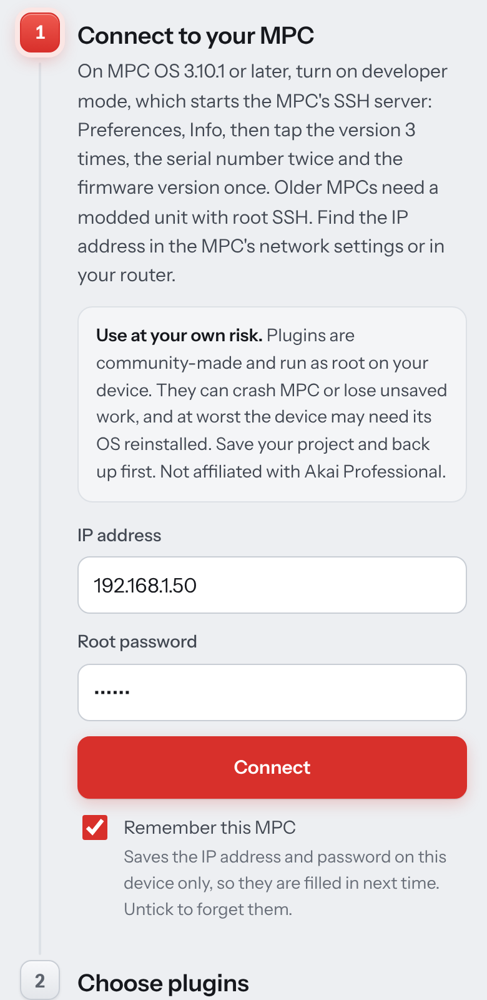
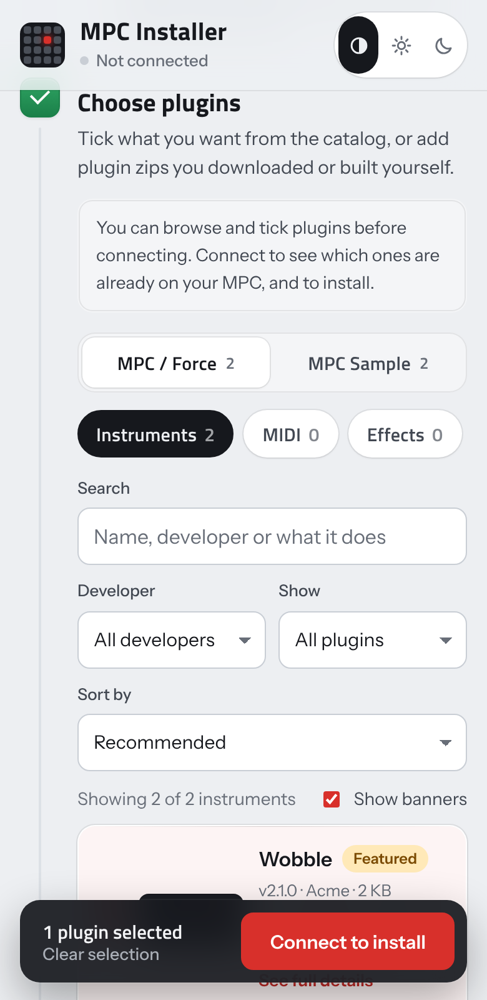
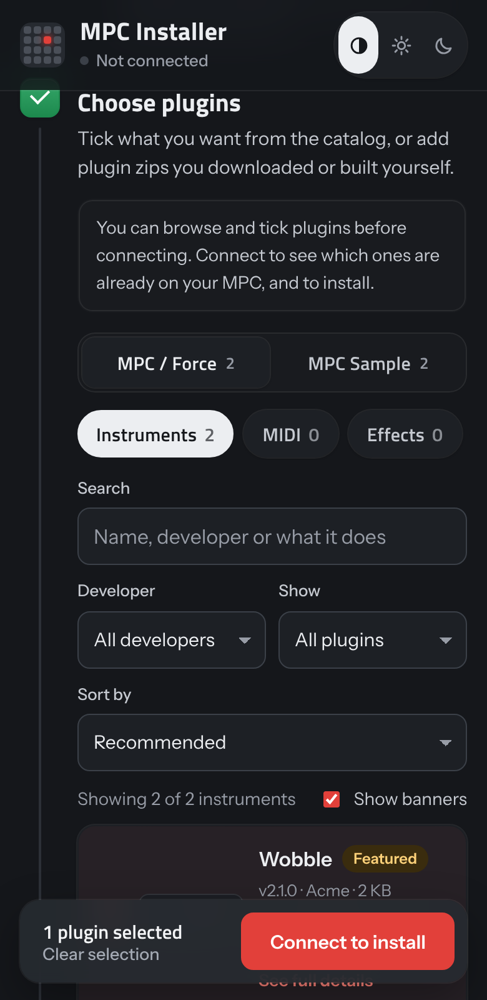
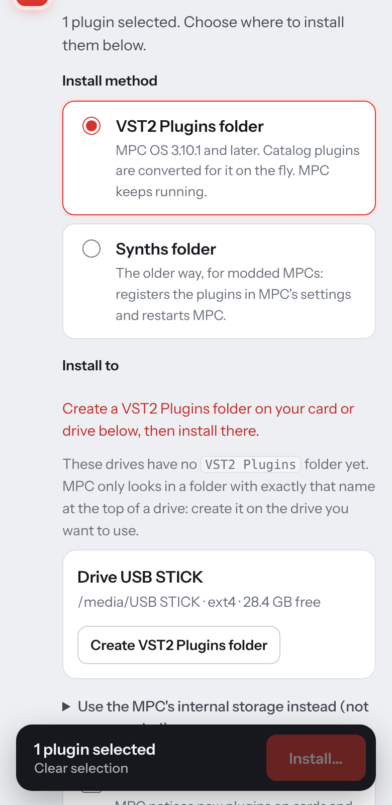
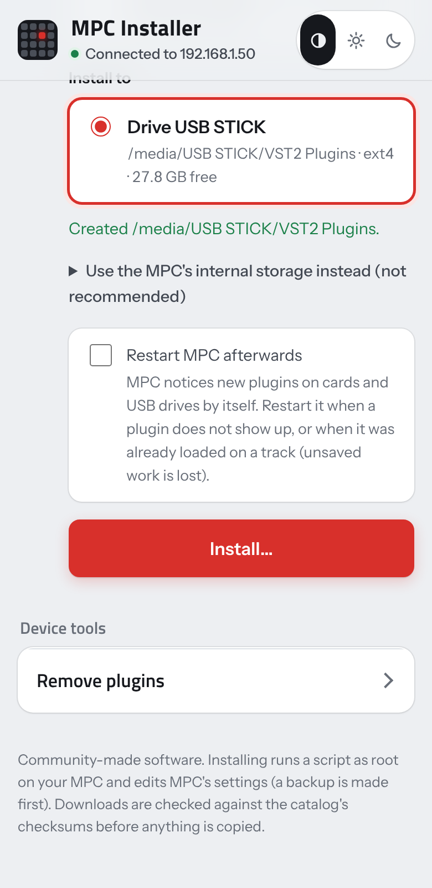
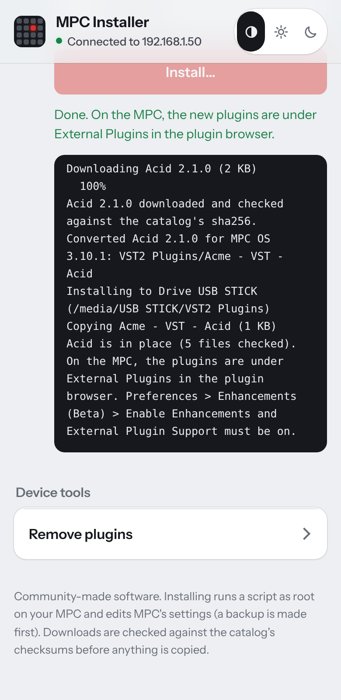

Install, update and remove VST plugins on an Akai MPC, Force or MPC Sample from your phone: into the VST2 Plugins folder of MPC OS 3.10.1 and later, or the Synths folder of a modded MPC.
mpc-installer-<version>-android.apk from the project's release page on GitHub, in your phone's browser.While the app is open it shows a small notification, "MPC Installer is running". That is intentional: it stops Android from cutting the app's Wi-Fi connection when you switch to another app in the middle of a copy.

192.168.1.50.Remember this MPC saves the address and password on this phone only, inside the app's own storage, and only after they connected. Untick it to forget them straight away. Without it, nothing about your MPC is saved.
The app shows what it found: the MPC OS version, the plugins already on it, and the places plugins can go. It also shows the device's key fingerprint. If it changes between sessions for the same MPC, be careful: it can mean you are talking to a different device.


MPC / Force or MPC Sample. The switch above the tabs picks which device the list is for, as on the catalog site. MPC / Force lists everything except what is made only for the MPC Sample. MPC Sample lists what is made for the Sample (tagged MPC Sample only, such as addins for its screen) and what someone has verified on one (Verified on MPC Sample); a plugin that only has a 64-bit build is not enough to be listed there. When you connect, the switch follows your device, and the app refuses a Sample-only plugin on any other MPC.
The list is the catalog's newest stable release of every downloadable plugin. You can browse it and tick plugins before connecting; connect to see which are already on your MPC and to install (the bottom bar's Connect to install takes you to step 1). Use the tabs (Instruments, MIDI, Effects, Addins, All), the search box, the developer filter, the sort and the "show" filter (not on the device, on the device, updates available, only the ones you ticked) to find what you want. Tick the plugins; what you ticked stays ticked while you filter. The list scrolls inside its own box, showing two or three plugins at a time, so the rest of the page is one short swipe below it. A bar at the bottom shows the count and an Install button.
You can also add your own release zips with Add plugin zips, which opens the phone's file picker. A zip is checked before it is accepted. Both kinds work: a release zip from the community catalog, and a zip made with inMusic's MPC Plugin Builder SDK (tagged MPC OS 3.10.1 format). Once a zip of yours has installed, the app drops it from the list; one that failed stays, so you can try again.
Plugins already on the device are flagged, and so are updates. Catalog downloads are checked against the catalog's checksums before anything is copied; a mismatch installs nothing.
MPC OS 3.10.1 brought support for third-party VST2 plugins: MPC loads them from a folder named VST2 Plugins at the top of any drive, in the format of inMusic's MPC Plugin Builder SDK. Older, modded MPCs load plugins from a Synths folder that has to be registered in MPC's settings. The app reads the MPC's version when it connects and picks the method for you. When both work, step 3 shows Install method so you can choose.


Under Install to the app lists the cards, USB drives and SSDs that already have a VST2 Plugins folder. A drive without one is listed with a Create VST2 Plugins folder button: tap it on the drive you want, and the app makes the folder and selects it. Cards and USB drives come first; the MPC's internal storage is hidden behind "Use the MPC's internal storage instead (not recommended)", for the same reason as below, and MPC only notices new plugins there when it starts.
Plugins from the catalog are made for the older Synths method, so the app converts each one on the fly before sending it, the way inMusic's own conversion tool does: the plugin's folder gets a plugin.json and a version.xml, loses the old installer's files, and is named Manufacturer - VST - Name as MPC expects. The plugin itself is not changed. The app also checks that its library fits your MPC (32-bit or 64-bit).
Restart MPC afterwards is off by default. MPC notices new plugins on cards and USB drives by itself; tick it when a plugin does not show up, or when it was already loaded on a track. A restart loses unsaved work.
Under Install to the app lists the drives it found under /media that already have a Synths folder, with the free space on each. Pick one. It is chosen for you when there is only one.
If a card or drive has none, the page lists it with a Create Synths folder button. Tap it and the app makes the folder on that drive, then selects it. Install stays off until a place is chosen; the app never installs somewhere you did not pick.
The internal drive is hidden behind "Use the MPC's internal drive instead (not recommended)". It is the MPC's built-in flash storage (eMMC): every install, update and file a plugin writes adds wear, and if it fails the MPC itself needs repair. A card, USB drive or SSD is cheap to replace. Open that section and tick "I understand" only if you have no other choice.
Under the choices there is a tick box, on by default: after installing, register every plugin folder on the device with MPC. This is built into the app, so nothing has to be on the MPC. It adds missing entries to MPC's plugin list, drops broken ones, and backs up MPC's settings first.
With the VST2 Plugins folder: tap Install…, check the summary and tap Install. MPC keeps running. Each plugin is converted if needed, copied to a hidden staging folder on the drive, moved into VST2 Plugins (an older copy is replaced) and its files are checked. A plugin that fails does not stop the others. When it says Done, open the plugin browser on the MPC: the plugins are under External Plugins.
With the Synths folder:

The app copies every package to a private folder on the device, stops MPC once, runs each plugin's installer, registers the plugin folders, starts MPC once and removes the temporary copies. MPC is started again even if something fails, and nothing after a failing plugin is installed.
Phones sometimes cut a connection (Wi-Fi sleep, a VPN, switching apps). If it drops during the copy, the app reconnects, checks that the device's key is unchanged, and copies once more. Until every copy has finished, nothing is installed and MPC has not been stopped.
If your MPC was set up the old way and now runs MPC OS 3.10.1 or later, plugins you installed before are still in a Synths folder. The app finds them when it connects (the connection summary says how many) and lists them under Device tools in Old plugins in Synths folders. You can move them, or delete the ones you no longer want.
plugin.json and version.xml MPC 3.10.1 needs, and every file is compared with the original before the copy is put in place. MPC keeps running. One that fails (for example a 64-bit library on a 32-bit MPC) does not stop the others, and its old folder is untouched.Delete without moving. To get rid of old plugins you do not want in VST2 Plugins, tick them and tap Delete… instead. Everything in their folders goes, your own files (ROMs, kits, dumps) included, and so do their entries in MPC's old plugin list (MPC's settings are backed up first, and MPC restarts once).
VST2 Plugins folder: the list shows the plugins in the VST2 Plugins folders. Removing one deletes its whole folder, including any samples or other files it came with. MPC keeps running; take the plugin off any track that uses it first.
Synths folder:
Under Device tools, open Remove plugins. It lists the plugin folders on the device. Tick the ones to remove and tap Remove…. The app stops MPC once, backs up MPC's settings, takes the plugin out of the plugin list, deletes the plugin's folder and starts MPC again.
Installing already registers its plugins, so most people never need this box. Open it under Device tools when a plugin folder is on the device but MPC does not show it. Typical causes: you copied a folder in by hand, or MPC forgot it because a card was out when it started.
The box shows how many folders are waiting. Tap Register…: the app adds the missing entries, drops entries whose plugin file is gone, leaves everything else alone, backs up MPC's settings first, and restarts MPC once.
Every install, removal and registering leaves a copy of MPC's settings file (MPC.settings.bak-…) on the device. They are small but nothing deletes them. Under Device tools, open Clean up old backups, choose how many of the newest to keep (10 is a good number) and tap Delete older backups…. The newest backup is never deleted, and MPC is not restarted.
| You see | Try this |
|---|---|
| Connect times out | Wrong IP, the MPC is asleep, or the phone is on another network (mobile data, guest Wi-Fi). Look the IP up again. |
| Permission denied, or Connect times out on MPC OS 3.10.1+ | Wrong password, or developer mode is off: turn it on again (Preferences, Info: the version 3 times, the serial number twice, the firmware version once). On older firmware, the unit needs root SSH access (a modded MPC). |
| "Not an MPC OS device" | The address belongs to another computer. Check the IP. |
| Install is greyed out | No install location is chosen. Pick a drive, or create a Synths folder on one (section 5). |
| "software caused connection abort" | The phone cut the connection. The app reconnects and retries once by itself. If it still fails, stay in the app, keep the screen on, and try again. Nothing is installed after a failed copy. |
| A plugin is not in MPC's browser (MPC OS 3.10.1+) | Check Preferences > Enhancements (Beta): Enable Enhancements and External Plugin Support must both be on. Look under External Plugins. If it is still missing, install again with Restart MPC afterwards ticked. |
| "needs arm64" or "built for arm32" | The plugin's library does not fit your MPC: 64-bit MPCs (Live III, XL) need a 64-bit build. Get the other zip, or ask its author for one. |
| Plugin only shows "Load Plugin" | Restart the MPC with the drive in, then register the folders (section 8). The drive may have been mounted noexec at that moment. |
| Plugin screen is empty | The folder is not one of MPC's content locations, or the plugin has no skin for your MPC OS version (MPC OS 2.x versus 3.x). |
| Not enough room, or drive refused | Free space on the drive, or use an ext4 drive: FAT, exFAT and NTFS cannot hold symbolic links. |
| Catalog does not load | The phone has no internet. The catalog and plugin downloads need it; the MPC does not. |
| Play Protect blocks the APK | Use the APK from the project release (it targets current Android). Choose More details then Install anyway if it still asks. |
tools/android/README.md. The app is the desktop installer (tools/desktop) in an Android wrapper, so the desktop and Android apps share the same page and behaviour.Screens shown use invented example plugins and an example IP address. This manual describes version 1.6.0. Tested by the author on a real MPC from an Android phone; still test a first install with a saved project.